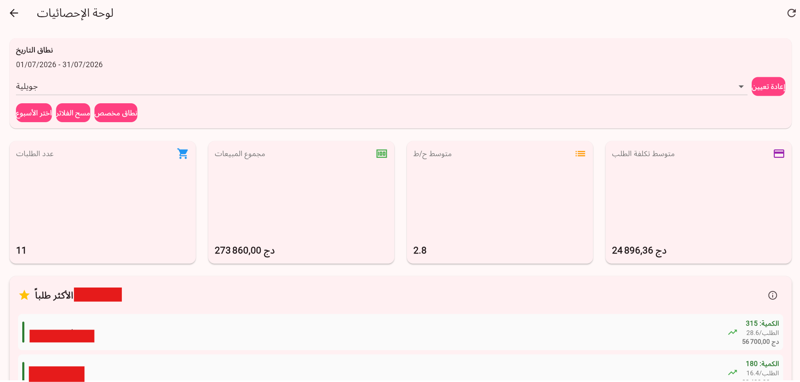
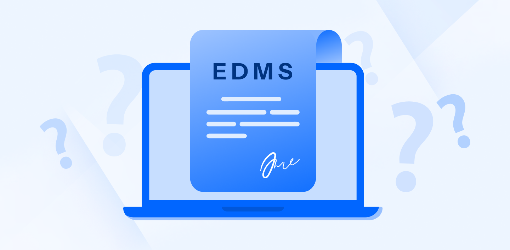
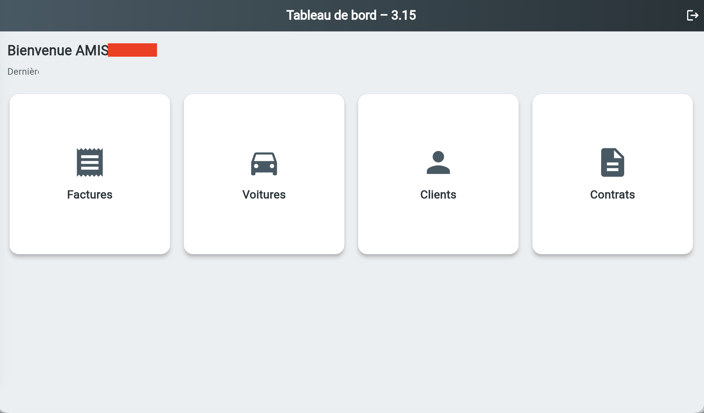
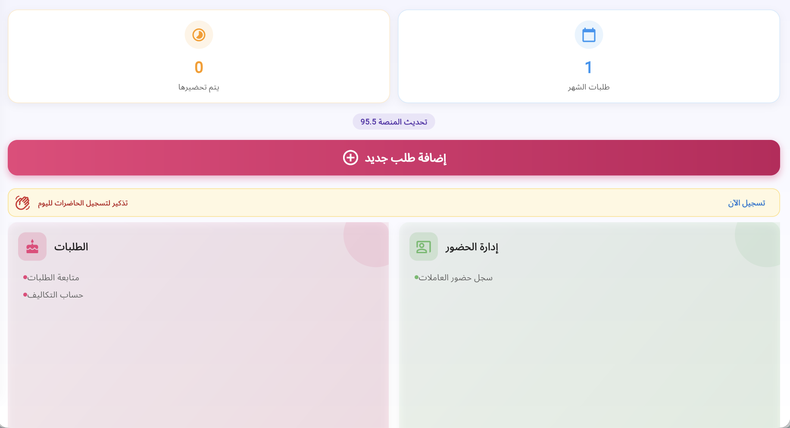
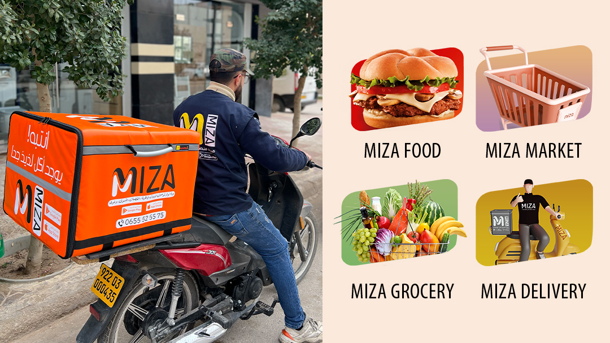

Projets Sélectionnés

Tableau de bord analytique BI - Cautions de Bonne Exécution
Conception d'un tableau de bord interactif Power BI pour piloter l'activité applicative et les flux opérationnels. Développement de KPIs, de mesures DAX et de rapports visuels pour suivre l'activité des utilisateurs, la performance des processus, les temps de traitement, les taux de validation et l'efficacité des workflows à partir de données anonymisées.

Analyse de Production Mini ERP
Développement de fonctionnalités analytiques et de rapports interactifs pour un système ERP de production, offrant une visibilité en temps réel sur les commandes, les flux de production, les assignations de tâches et les performances opérationnelles via des tableaux de bord orientés KPIs développés sous Flutter.
Digitalisation des Cautions - Cautions de Bonne Exécution
Application de bureau automatisant les circuits de suivi interne à l'ENAC. Réduction du temps de traitement des documents et de circulation des approbations de 15 jours à 4 jours, tout en améliorant la visibilité et la traçabilité des audits.
Application Web d'Estimation des Coûts
Outil interne d'estimation des besoins de projets (main-d'œuvre, équipements, consommables) basés sur des zones personnalisées. Intégration d'un moteur de calcul robuste avec génération et exportation automatisée vers Excel.

GED d'Entreprise (EDMS)
Collaboration au sein d'une équipe d'ingénierie pour modéliser et concevoir une solution de Gestion Électronique des Documents (GED) afin de centraliser la création de documents, l'indexation basée sur les rôles, la gestion des versions et les flux de travail dématérialisés.

AMISTA – Système de Gestion de Location de Véhicules
Une plateforme complète de gestion de location de véhicules conçue pour optimiser les flux opérationnels. Automatise le suivi des contrats, la disponibilité de la flotte, le calcul de la TVA et les exports personnalisés de documents PDF/Excel. Temps de création de contrat réduit de 45 à 5 minutes.

ROKN – Plateforme Connectée pour Associations de Quartier
Un écosystème numérique sécurisé simplifiant la collecte des cotisations financières, l'administration et la communication communautaire pour les comités de quartier en Algérie. Implémentation d'un contrôle d'accès robuste basé sur les rôles et d'un système d'anonymisation des résidents conforme au RGPD. Réduction de 70 % de la charge administrative.

Atelier de Production (Mini ERP)
Une plateforme multi-utilisateurs de gestion de production bâtie sur une architecture modulaire. Comprend le suivi des commandes, l'attribution des tâches, la gestion RBAC et des APIs REST. Permet d'étendre la capacité de traitement de 49 à plus de 165 commandes.

Plateforme de Livraison MIZA Com
Co-fondateur et concepteur de l'architecture backend d'une application de livraison multi-services à grande échelle servant plus de 15 000 utilisateurs. Déployée sur GCP en priorisant la haute disponibilité et un débit de traitement optimal.